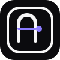

Local use only. This page sends your API key to the local URL you enter. Serve the dashboard locally over HTTP: an HTTPS page, including GitHub Pages, may be blocked from reaching localhost by mixed-content or Private Network Access rules. The API's CORS allow-list must include the dashboard's exact origin.

Your data, without the friction.
Connect to a neuDB API on localhost, choose a table, and manage records with a friendly interface.
TABLE
—
0 records
No records on this page.